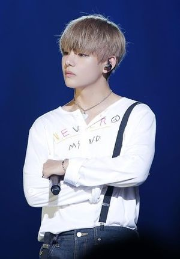
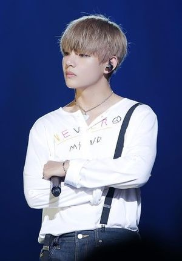
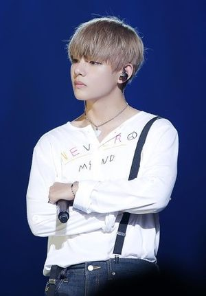
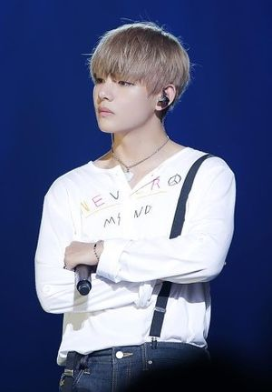

  

V was born Kim Tae-hyung on December 30, 1995, in the Seo District of Daegu, South Korea, and grew up in Geochang County. He is the eldest of three children, with a younger brother and sister.V first aspired to be a professional singer in elementary school, and eventually began taking saxophone lessons in early middle school as a means of pursuing the career. V's father agreed with his journey on learning how to play the saxophone. V initially became a trainee for Big Hit Entertainment after passing an audition in Daegu. After graduating from Korean Arts High School in 2014, V enrolled in Global Cyber University. On June 13, 2013, he made his debut as a member of BTS on Mnet's M Countdown with the track "No More Dream" from their debut single album, 2 Cool 4 Skool. He was first credited for music composition in The Most Beautiful Moment in Life, Part 1 when he co-wrote and co-produced the song "Hold Me Tight". He also contributed to writing lyrics for the song "Fun Boyz", co-composed by bandmate Suga. For the song "Run", V's melody was used with Jungkook's original lyrics for the next album The Most Beautiful Moment in Life, Part 2. Furthermore, he contributed to music composition and lyrics for a solo song called "Stigma" from the album Wings. V has also released, unofficially, a cover of "Hug Me" with bandmate J-Hope as well as a cover of "Someone Like You" by Adele. In May 2018, his second solo song, "Singularity" was released as the trailer for BTS' then upcoming third LP, Love Yourself: Tear. The track made its UK radio debut on BBC radio on October 25. A month after its release, The Guardian added "Singularity" to its "Top 50 songs for the month of June 2018" playlist and Billboard included it in their Critics' list of the "Top 50 BTS songs" at number 28. Overall, "Singularity" was generally well received by critics and as a result was mentioned on several year end Critics' Choice lists. The New York Times ranked it twentieth on its list of "The 65 Best Songs of 2018" alongside "Fake Love", LA Times Pop Music Critic Mikael Wood named it the fourth "best and most replay worthy song of 2018", and Guardian Music Critic Laura Snapes included it as one of her favourite tracks in their “Best Music of 2018: Albums and Tracks" list. On October 24, V became one of the youngest recipients of the prestigious fifth-class Hwagwan Order of Cultural Merit medal, awarded to him by the President of South Korea along with the other members of BTS for their role in the spread of culture. V, together with bandmate J-Hope, collaborated with Swedish singer Zara Larsson on a song called "A Brand New Day" for the soundtrack album of their mobile game BTS World. It was released on June 14, 2019 and debuted at number 1 on World Digital Song Sales Chart. Eight months later, he collaborated with bandmate Jimin for the song "Friends" and he also participated in the composition and writing of his solo song, "Inner Child" on their album
Back to Profiles Page